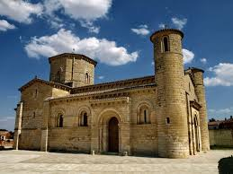
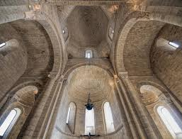
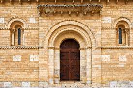

Cronología: siglo XI (1066)
Autor: Anónimo (Restaurado Manuel Aníbal Álvarez Amoroso)
Lugar: Frómista, Palencia (Castilla y León)
Estilo: Románico.
Materiales: Sillar.
PLANTA:

- Como podemos observar, nos encontramos ante una Iglesia de planta basilical de cruz latina (rectangular). Además, podemos observar que posee tres naves (con bóvedas de cañón sujetadas por arcos fajones) rematadas al este por medio de sus respectivos ábsides semicirculares (ahí, en el interior, se encuentran las capillas). Por otra parte, cabe destacar que la anchura de la nave central es el doble de las laterales y es más alta.
- Sobre el transepto, el cual no sobresale en planta, encontramos (en el crucero) un cimborrio octogonal.
- Las naves laterales se separan de la central por pilares cruciformes y arcos formeros.
- En el exterior del transepto encontramos unos contrafuertes y en la puerta de entrada, a su vez, esta a los lados presenta dos torres cilíndricas, las cuales en su interior poseen unas escaleras de caracol.
- También posee 10 pilares cruciformes.
EXTERIOR:
La apariencia de esta Iglesia es característica del románico (etapa en que fue construida), pues sobre sus naves, de escasa altura, destaca su cimborrio octogonal sobre el crucero y sus dos torres cilíndricas a ambos lados de la fachada principal. Desde el exterior podemos apreciar sus gruesos muros construidos con sillares, escasos ventanales y arcos de medio punto en los ábsides y laterales del templo. Además, podemos observar los contrafuertes, que soportan los grandes muros, que a su vez soportan las bóvedas de las naves y varias columnas adosadas. Por otro lado, en las fachadas, a modo de cornisa, se extiende un adorno ajedrezado de piedra a diferentes alturas. Además, bajo los aleros de las puertas y tejados podemos observar sus más de 300 canecillos. Casi todos sus vanos y aleros poseen columnas con numerosos capiteles (explicados en el apartado de decoración). También, cabe destacar el crismón de seis brazos que hay sobre la puerta principal. Esta iglesia tiene cuatro entradas, la principal, dos en el lado sur y una en el norte, esta última está tapiada. Además, si agudizamos la vista podemos observar en la fachada principal la figura de un pollo colocada como si fuese una gárgola (en la punta de la torre izquierda).

INTERIOR
En su interior, podemos encontrar sus bóvedas de cañón reforzadas por arcos fajones y apoyados sobre pilares cruciformes (con columnas adosadas). En cuanto a su sistema de contrarresto, como explicaba antes, el peso de la nave central se traslada a las naves laterales y de estas a los pilares, al muro y a los contrafuertes. Los arcos fajones que refuerzan las bóvedas de cañón de las tres naves descansan sobre los pilares de sección cuadrada con semicolumnas en sus cuatro frentes. Además, separando las naves laterales de la central encontramos arcos formeros que sirven de refuerzo. Siguiendo con los ábsides, estos tienen una bóveda de cuarto de esfera, también llamada de horno. La principal función de estos elementos es sostener toda la estructura e impedir que colapse, aunque también cumplen una función estética al introducir los capiteles tallados.
Por otra parte, sobre el crucero encontramos un cimborrio octogonal (proporciona gran parte de la luz a la Iglesia, en esta parte en concreto observamos el paso de estructura cuadrada a redonda (cúpula) que se realiza a través de las trompas y no de pechinas como se verá en el gótico.

DECORACIÓN
Si prestamos atención a los arcos exteriores, tanto a los que se encuentran en las puertas como en las ventanas, observamos que estos poseen tres arquivoltas, en las cuales se observa como la del medio es en baquetón y al exterior se puede ver un guardapolvo ajedrezado. Sujetando estos arcos de medio punto (la arquivolta central) se encuentran unas columnas con capiteles muy variados.
